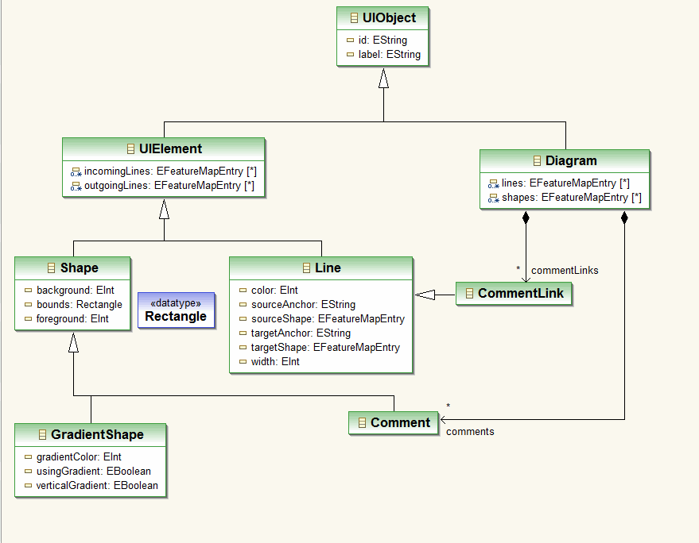
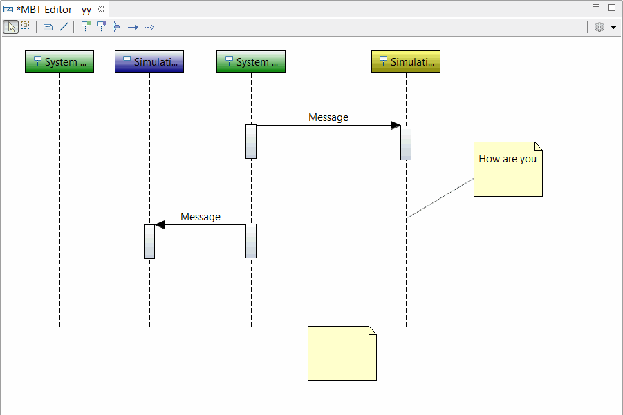

Overview
Soyatec Tooling Project provided toolings for developing GEF Graphical Editors, Eclipse Views based on Tree and externalization for Chinese.
Toolings for GEF Graphical Editor
- Provided EMF based Diagram Intergration model for Graphical Editor.

- Provided some useful classes for GEF.
- Abstract EditParts and EditPolicies classes based on DI models.
- CommandStack and Commands, combined EMF commands and GEF commands.
- Figures for displaying Label and drawing gradient.
- Text direct edit manager based on a labeled figure.
- Common connection anchor based on a string terminal value.
- ResourcesFactory for managing images, fonts and colors.
- Provided a new graphical editor with a ToolBar Palette.

Translation eclipse workbench to Chinese
- org.eclipse.ui.ide
- org.eclipse.ui.workbench
- org.eclipse.jfaces
- org.eclipse.ui.views
- org.eclipse.gef
Tooling for developing Views
- TreeViewer ViewPart
- PropertySheetPage with Form